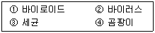
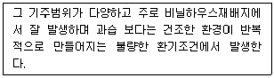
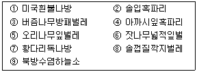

식물보호산업기사 (2011-10-02 기출문제)
1과목: 식물병리학
1. 식물병원 세균 중에서 대장균과 가장 가까운 병원균속은?
- Rseudomonas
- Erwinia
- Agrobacterium
- Clavibacter
(정답률: 58%)

2. 파이토플라스마(Rhytoplasma)병이 아닌 것은?
- 뽕나무 오갈병
- 대추나무 빗자루병
- 감자 걀쭉병
- 과꽃 누른오갈병
(정답률: 78%)
3. 맥류 흰가루병의 2차 전염은 어떤 포자의 비산에 의하여 이루어지는가?
- 자낭포자
- 수포자
- 난포자
- 분생포자
(정답률: 57%)
4. 생물적 방제의 장점으로 옳은 것은?
- 병이 발생한 후 치표효과가 매우 좋다.
- 환경보전과 지속적 농업에 잘 부합한다.
- 넓은 지역에 광범위하게 활용하기 쉽다.
- 효과가 신속하고 정확하다.
(정답률: 92%)
5. 다음 중 전염병이 아닌 병해는?
- 진균에 의한 피해
- 세균에 의한 피해
- 과습에 의한 피해
- 바이러스에 의한 피해
(정답률: 86%)
6. 넓은 의미의 식물병의 생물적 방제에 관한 설명으로 틀린 것은?
- 토양에 게껍질(키틴)을 시용하여 Fusarium 병을 방제한다.
- Rhizocyonia 의 길한균으로는 Tricgoderma 가 잘 알려져 있다.
- Agrobacterium radiobacter84는 과수 근두암종병의 방제에 이용된다.
- Aflatoxin은 Aspergillus flavus 방제에 이용된다.
(정답률: 59%)
7. 노균병균이 기주에 침입하는 주요 기관이며, 포자낭(유주자낭)경을 관찰할 수 있는 부위는?
- 기공
- 상처
- 뿌리
- 종자
(정답률: 78%)
8. 식물병원체들을 크기가 작은 것부터 큰 것 순으로 맞게 나열된 것은?

- ①②③④
- ①②④③
- ②①③④
- ②①④③
(정답률: 87%)
9. 식물병의 발병에 관여하는 3대 요인과 가장 거리가 먼 것은?
- 병원체의 밀도
- 야생동물의 가해
- 기주식물의 감수성
- 일조부족
(정답률: 90%)
10. 교차보호(교차방어)란 무엇인가?
- 병과 해충을 동시에 방제하는 것
- 병 발생시 살충제, 해충발생시 살균제를 사용하여 방제하는 것
- 약독계통의 바이러스를 이용하여 강독계통 바이러스의 감염을 줄이는 것
- 세균을 이용하여 곰팡이병, 곰팡이를 이용하여 세균을 예방하는 것
(정답률: 81%)
11. 벼 줄무늬잎마름병의 병원체인 바이러스를 매개하는 해충은?
- 벼멸구
- 흰둥멸구
- 애멸구
- 벼물바구미
(정답률: 87%)
12. 종합적 방제법이란?
- 여러 가지 농약을 종합해서 살포하는 방법이다.
- 모든 작물병을 동시에 방제하는 방법이다.
- 병과 충을 동시에 방제하는 방법이다.
- 여러 가지 방제수단을 종합적으로 적용하는 방법이다.
(정답률: 89%)
13. 병에 걸린 곡물을 사료로 사용하면 가축에 중독증상을 일으키는 맥류의 병은?
- 녹병
- 마름병
- 붉은곰팡이병
- 깜부기병
(정답률: 90%)
14. 인삼 또는 당근의 뿌리에 혹과 같은 병징을 일으키는 대표적인 것은?
- 뿌리혹박테리아
- 뿌리혹선충
- 노균병균
- 토양수분
(정답률: 82%)
15. 전형적인 벼잎도열병의 병징은?
- 원형
- 타원형
- 방추형
- 줄무늬
(정답률: 85%)
16. 다음에서 설명하는 병은?

- 노균병
- 탄저병
- 흰가루병
- 도열병
(정답률: 61%)
17. 방제에 사용되는 약제에 대한 저항성 균의 출현 기작에 해당되지 않는 것은?
- 대사의 변화에 의해 활성화된 효소의 생산량 증가
- 균체 내로 약제 침투량의 감소
- 병원균에 의한 약제의 불활화
- 약제 작용점의 약제에 대한 친화성의 저하
(정답률: 60%)
18. 식물바이러스를 매개하는 것으로 밝혀진 선충이 아닌 것은?
- Xiphinema
- Longidorus
- Trichodorus
- Meloidogyne
(정답률: 70%)
19. 병원균과 월동처가 잘못 짝지어진 것은?
- 감자 둘레썩음병균 – 병든 씨감자
- 벚나무 궤양병균 – 토양
- 포도나무 뿌리혹병 – 토양
- 콩 세균성점무늬병 – 병든 종자
(정답률: 71%)
20. 여름 날씨가 저온다습 할 때 심하게 발생되는 벼의 병은?
- 잎집무늬마름병
- 도열병
- 깨시무늬병
- 오갈병
(정답률: 77%)
2과목: 농림해충학
21. 복숭아 혹진딧물의 분류학적 위치는?
- 벌목(Hymenoptera)
- 매미목(Homoptera)
- 노린재목(Hemiptera)
- 총채벌레목(Thysanoptera)
(정답률: 50%)
22. 장거리 이동성 곤충과 가장 관계가 깊은 것은?
- 광선
- 온도
- 습도
- 저기압
(정답률: 63%)
23. 우리나라 곤충상이 속하는 동물지리학적 분포구는?
- 신북구
- 구북구
- 동양구
- 하와이구
(정답률: 75%)
24. 토양병과 함께 전작물의 연작을 불가능하게 하는 동물군을 무엇이라고 하는가?
- 땅강아지
- 선충
- 응애
- 거미
(정답률: 65%)
25. 천막벌레나방에 대한 설명으로 틀린 것은?
- 활엽수를 가해한다.
- 4령기 까지 가지의 분지점에 텐트 모양의 집을 만들고 군서한다.
- 성충이 가해한 잎에 피해가 나타난다.
- 주요 천적으로는 새, 기생벌, 바이러스 등이 있다.
(정답률: 61%)
26. 곤충 가슴의 부속기관과 거리가 먼 것은?
- 날개
- 기문
- 다리
- 더듬이
(정답률: 82%)
27. 곤충 피부에 관한 설명으로 틀린 것은?
- 표피를 형성하는 키틴질은 기저막이 분비한다.
- 형성초기의 표피는 연하지만 시간이 지나면 굳어진다.
- 표피는 골화(骨化)되어 수분의 증발을 막을 수 있다.
- 피부의 화학적 구조와 접촉독제의 피부투과력과는 밀접한 관계가 있다.
(정답률: 67%)
28. 곤충강에 속하지 않는 해충은?
- 가루깍지벌레
- 점박이응애
- 목화진딧물
- 독나방
(정답률: 84%)
29. 산림해충 중 주로 소나무류를 가해하는 해충으로만 나열된 것은?

- ①②③
- ③④⑤
- ⑥⑦⑧
- ②⑧⑨
(정답률: 87%)
30. 솔나방에 대한 설명으로 틀린 것은?
- 일년주에서 6~7월에 주로 소나무림에 피해를 준다.
- 난기(卵期)에는 송충알벌 천적이 기생한다.
- 나무껍질이나 지피물 사이에서 5령충으로 월동한다.
- 일반적으로 성충이 되기까지는 자연폐사율이 낮은 편이다.
(정답률: 59%)
31. 곤충의 외분비물질로 한쪽 또는 양쪽 성 모두가 분비하여 같은 종 내의 다른 개체들을 먹이가 있는 곳이나 교미장소로 유인하는 종내 통신물질로 나무좀류에서 발달되어 있는 물질은?
- 집합페로몬
- 경보페로몬
- 길잡이페로몬
- 성페로몬
(정답률: 55%)
32. 흡즙성 해충이 아닌 것은?
- 거북밀깍지벌레
- 밤나무왕진딧물
- 전나무잎응애
- 소나무순나방
(정답률: 69%)
33. 일반적으로 나방류 유충의 기문의 수는?
- 10쌍
- 12쌍
- 14쌍
- 16쌍
(정답률: 68%)
34. 물에서 생활하는 기간이 없는 곤충류는?
- 뿔잠자리
- 실잠자리
- 물장군
- 날도래
(정답률: 56%)
35. 줄기 속을 식해하여 가해하는 해충은?
- 쿵풍뎅이
- 숯검은밤나방
- 거세미나방
- 박쥐나방
(정답률: 57%)
36. 곤충의 필수영양분이 아닌 것은?
- 포도당
- 스테롤
- 콜린
- 알기닌
(정답률: 64%)
37. 콩나방의 생태 및 피해에 관한 설명으로 틀린 것은?
- 1년에 1회 발생한다.
- 땅속에서 노숙유충으로 월동한다.
- 콩줄기 속에 파고 들어가 피해를 준다.
- 나방의 발생시기와 콩의 개화시기가 일치하면 피해가 심한 경향이 있다.
(정답률: 61%)
38. 체내 수분증산을 억제하는 표피층 구조는?
- 원표피층
- 외원표피층
- 외표피층
- 내원표피층
(정답률: 62%)
39. 수확 후 저장 중인 감자에 벌레가 먹어 들어간 구멍이 있고, 똥이 밖으로 나와 있었다. 어떤 해충의 피해인가?
- 방아벌레
- 감자나방
- 참검정풍뎅이
- 숯검은밤나방
(정답률: 75%)
40. 곤충 수컷의 생식기관에 해당되지 않는 것은?
- 정소(精巢)
- 수정관(輸精管)
- 수정낭(受精囊)
- 사정관(射精管)
(정답률: 78%)
3과목: 농약학
41. 메치온(Methidathion) 40% 유제를 1000배액으로 희석해서 10a 당 6말(20L/말)을 살포하여 해충을 방제하고자 할 때 유제의 소요량은 몇 mL 인가?
- 100
- 120
- 150
- 240
(정답률: 76%)
42. 해충의 신경자극 전달체계 중 acetylcholinesterase(AChE)를 저해하여 살충작용을 나타내는 살충제 부류는?
- 유기인계
- 유기염소계
- 미생물살충제
- Derris제
(정답률: 71%)
43. 무기 유황살균제의 작용기작에 대한 설명으로 가장 거리가 먼 것은?
- 유황이 황산으로 변함에 따른 균체내 산도변화
- 유황이 이산화황이나 삼산화황으로 산화되어 작용
- 유황이 황화수소로 환원되어 작용
- 유황이 직접 작용
(정답률: 40%)
44. 계면 활성제를 구성하는 다음 원자단 중 친유성이 가장 강한 것은?
- ROCH2-
- -CnH2n+1
- -OH
- -SO3H
(정답률: 69%)
45. 살비제(살응애제)의 작용점 및 작용기작과 같은 종류의 농약은?
- 제초제
- 살균제
- 살선충제
- 살충제
(정답률: 65%)
46. 농약을 사용목적에 따라 분류한 것이 아닌 것은?
- 살균제
- 살충제
- 유제
- 제초제
(정답률: 78%)
47. 다조메 85%, 분제 1kg을 50%의 분제로 만들려면 증량제가 얼마나 필요한가?
- 0.58kg
- 0.7kg
- 1.0kg
- 1.5kg
(정답률: 74%)
48. 다음과 같은 화학구조를 가지는 제초제는?
- 2,4-D
- EPN
- MCP
- TBA
(정답률: 63%)
49. 카바메이트계 농약에 의하여 중독되었을 때 주로 사용할 수 있는 해독제는?
- 팡제
- 아트로핀제
- 발제
- 스테로이드제
(정답률: 59%)
50. 2,4-D 산의 형태 중 작용력이 가장 커 물이 채워져 있는 논에 그대로 처리하여도 효과가 큰 것은?
- 에스테르형
- 소다형
- 암모늄형
- 아민형
(정답률: 72%)
51. 농약의 독성발현 시기에 따른 독성구분에 해당하지 않는 것은?
- 급성독성
- 흡입독성
- 아급성독성
- 만성독성
(정답률: 74%)
52. 접촉독, 소화중독으로 효과를 나타내는 유기인계 살충제로서 야생조류에 피해를 줄 수 있으므로 사용 시 주의하여야 하는 농약은?
- 클로르피리포스 수화제
- 다이아지논 유제
- 페노뷰카브 유제
- 아이소프로티올레인 유제
(정답률: 53%)
53. 다음 중 제초제 사용의 필요성이 아닌 것은?
- 잡초가 농작물의 양분과 수분을 탈취하므로
- 잡초가 노동력을 감소시키므로
- 잡초가 햇빛을 차단하여 작물의 생육을 방해하므로
- 잡초가 해충 및 병균의 기주가 되므로
(정답률: 81%)
54. 농약살포액 조제방법에 대한 설명으로 옳지 않은 것은?
- 비중이 1에 가까운 약제는 용량으로 살포액을 조절한다.
- 비중이 높은 약제는 중량으로 계산하여 조제한다.
- 퍼센트액 조제는 농가에서 일반적으로 사용하는 조제방법이다.
- 살포액 조제는 중량으로 계산하여 조제하는 것이 원칙이다.
(정답률: 75%)
55. 농약 취급시 발생할 수 있는 안전사고를 예방하기 위하여 품목별로 혼합적재 금지 대상물건, 안전용기·포장의 사용, 공급대상자 등에 대한 규정을 독성 및 잔류정도별로 구분하여 지켜야 하는 기준을 무엇이라고 하는가?
- 농약의 안전사용기준
- 농약의 취급제한기준
- 농약 사용 시 주의사항
- 농약의 안전관리기준
(정답률: 50%)
56. 다음 중 설포닐 우레아(Sulfonyl urea)계 제초제의 특징에 해당하는 것은?
- 비선택성 제초제로서 약효가 우수하다.
- 다년생 잡초에 선택적으로 약효를 나타낸다.
- 낮은 약량으로 높은 활성을 나타낸다.
- 방동사니와 잡초를 특이선택적으로 방제한다.
(정답률: 50%)
57. 주성분 조성에 따른 농약 분류의 연결이 잘못된 것은?
- 유기인계농약 – 이피엔(EPN)
- 카바메이트계농약 – 나크(NAC)
- 유기유황계농약 – 이사디(2,4-D)
- 유기비소계농약 – 네오아소진(Neoasozin)
(정답률: 72%)
58. 농약의 제제에 사용되는 계면활성제(Surfactant)의 작용이 아닌 것은?
- 활착작용
- 습윤작용
- 분산작용
- 세정작용
(정답률: 62%)
59. 농약의 독성을 표시하는 다음 용어 중 다른 하나는?
- 반수치사량
- 시험동물의 50%가 죽는 농약의 양
- LD50
- LC50
(정답률: 78%)
60. 물리적 화학적 성질이 비교적 안정하고 토분성이 좋아서 유기합성 농약의 분제 제제용으로 주로 사용되는 광물성 증량제는?
- bentonite
- talc
- kaolin
- clay
(정답률: 70%)
4과목: 잡초방제학
61. 우리나라 밭에서 발생하고 있는 주요잡초들로 나열된 것은?
- 피, 개구리밥, 명아주, 망초
- 올챙이고랭이, 닭의장풀, 피, 물달개비
- 뚝새풀, 가래, 쇠비름, 바랭이
- 망초, 명아주, 닭의장풀, 별꽃
(정답률: 68%)
62. 제초제 제형 중 수화제를 나타내는 것은?
- EC
- WP
- G
- Sol
(정답률: 83%)
63. 우리나라의 논에서 주로 발생하는 화본과 잡초는?
- 올방개
- 물달개비
- 바랭이
- 피
(정답률: 76%)
64. 잡총의 생물학적 방제의 장점과 거리가 먼 것은?
- 비교적 영속성이 있다.
- 환경에 잔류가 없다.
- 살초작용이 빠르다.
- 방제법이 간단하다.
(정답률: 85%)
65. 잡초가 동일한 밀도로 발생하였을 때 벼와 경합력이 가장 큰 잡초는?
- 피
- 물달개비
- 마디꽃
- 알방동사니
(정답률: 89%)
66. 논에서 발생하는 주요 잡초로만 바르게 나열된 것은?
- 명아주, 가막사리
- 물옥잠, 개구리밥
- 바랭이, 생이가래
- 물방개, 어저귀
(정답률: 73%)
67. 논에 다년생 잡초인 올방개의 방제법으로 바람직한 방법이 아닌 것은?
- 추경 또는 춘경 등 경운을 한다.
- 벤푸러세이트가 혼합된 제초제를 초기에 처리한다.
- 밧사그란을 생육기에 처리한다.
- 직파재배를 한다.
(정답률: 84%)
68. 5.0% 유효성분을 함유한 A제초제 입제를 유효성분량으로 1ha당 100g을 살포하려고 할 때 필요한 제품량은?
- 2.5kg
- 3.0kg
- 2.0kg
- 1.5kg
(정답률: 64%)
69. 제초제의 일반적인 특성이 아닌 것은?
- 제초제에 대한 반응은 식물의 생장상태에 따라 다르다.
- 어린 식물일수록 제초제에 민감하다.
- 생장속도가 빠른 식물이 제초제에 민감하다.
- 쌍자엽식물이 단자엽식물보다 제초제에 대한 내성이 강하다.
(정답률: 72%)
70. 우리나리의 밭에서 많이 발생하는 광엽잡초는?
- 향부자
- 피
- 쇠비름
- 강아지풀
(정답률: 64%)
71. 생태적 방제법에 대한 설명 중 잘못된 것은?
- 작물의 초관형성시기를 빠르게 한다.
- 연작을 실시한다.
- 작물의 재식밀도를 조절한다.
- 결주는 즉시 보식한다.
(정답률: 64%)
72. 작물과 잡초의 경합에 관여하는 요인들 중에서 가장 경미한 경합인자는?
- 광
- CO2
- 수분
- 영양분
(정답률: 80%)
73. 다음 중 작물의 전 생육기간에 비하여 잡초경합한계기간(critical period for weed competition)이 가장 긴 것은?
- 녹두
- 땅콩
- 양파
- 벼
(정답률: 77%)
74. 잡초 중 종자에 의해 번식되는 것과 가장 거리가 먼 것은?
- 바랭이
- 피
- 올방개
- 뚝새풀
(정답률: 57%)
75. 타감작용(Allelopathy)과 가장 관계가 깊은 것은?
- 항생물질
- 약해경감물질
- 상호대립억제물질
- 혼합물질
(정답률: 84%)
76. 잡초에 대한 벼의 경합력을 높이는 재배방법은?
- 직파재배
- 이앙재배
- 무경운재배
- 부분경운재배
(정답률: 82%)
77. 제초제의 휘산과 광분해를 막는데 가장 효과가 있는 처리방법은?
- 토양표면처리
- 토양혼화처리
- 경엽처리
- 토양대상처리
(정답률: 55%)
78. 다음 중 잡초의 형태적 특성에 따라 분류할 때 같은 초종끼리 나열한 것은?
- 피, 바랭이, 둑새풀, 물참새피
- 쇠비름, 바랭이, 물달개비, 깨풀
- 피, 애자기, 둑새풀, 방동사니
- 물참새피, 쇠비름, 깨풀, 방동사니
(정답률: 49%)
79. 두 종류 이상의 제초제를 혼합하여 얻은 효과가 단독으로 처리한 반응을 각각 합한 것보다 높을 때의 효과는?
- 부가효과(Additive effect)
- 상승효과(Synergistic effect)
- 길항효과(Antagonistic effect)
- 독립효과(Independent effect)
(정답률: 74%)
80. 다음 잡초 중 실모양의 흡기조직으로 기주식물의 줄기나 뿌리에 기생하는 잡초는?
- 피
- 물달개비
- 명아주
- 새삼
(정답률: 79%)